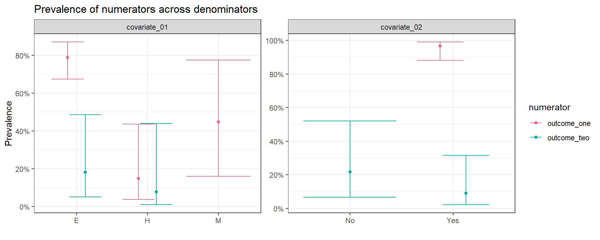

howto-reprex.RmdProblem
Method details
survey:
serology:
Here we applied a Bayesian method to estimate the posterior probability of seroprevalence for a test with unknown performance (Daniel B. Larremore et al. 2020).
As inputs we used the expanded point estimate number of positive tests and total population that resulted from the sampling weights adjusted seroprevalence estimation.
To maintain the sampling design uncertainty, we applied the same method for each estimated confidence interval.
Since test sensitivity and specificity were unknown, we used the reported number of true positives, false positives, true negatives and false negatives from a local test performance evaluation.
For this worlflow we used lab validation results from an example available in the epiR package: ?epiR::epi.tests
Workflow details
In this reprex the survey design does not include any explicit strata. Include it if available in I.3.
The family of functions serosvy_*_sample_posterior to correct prevalence due to test performance require positive integers. This is adressed in II.2.1.
We use purrr and furrr within a for-loop in II.2.2 to efficiently update prevalence posterior distributions for multiple prevalences.
Limitations
We do not apply a multiple subpopulation aproach for the inference of prevalence. This is currently available for a test with known performance (Daniel B Larremore et al. 2020).
This workflow is only applicable to categorical variables.
set.seed could not control the variability generated by test correction functions.
datasurvey is the input dataframeoutcome_one and outcome_two
covariate_01 and covariate_02
data(api)
datasurvey <- apiclus2 %>%
mutate(survey_all="survey_all") %>%
# conviniently create variables
# to identify outcomes and covariates throughout the script
mutate(outcome_one = awards, # this have the serology results
outcome_two = cut(pct.resp,breaks = 2),
covariate_01 = stype,
covariate_02 = both,
# two stage cluster samples
primary_sampling_unit = dnum,
secondary_sampling_unit = snum,
# strata = census_tracts, (activate if available)
sampling_weights = pw) %>%
# recode factor leves to replicate serology results
mutate(outcome_one=fct_recode(outcome_one,
"negative"="No","positive"="Yes")) %>%
mutate(outcome_two=fct_recode(outcome_two,
"negative"="(50,100]","positive"="(-0.1,50]"))select and colnames we create strings of covariates# outcome
outcome_set00 <- datasurvey %>%
select(outcome_one,
outcome_two) %>%
colnames()
# denominators
covariate_set01 <- datasurvey %>%
select(covariate_01,
#covariate_03,
#covariate_04,
covariate_02) %>%
colnames()
# numerators within outcome
covariate_set02 <- datasurvey %>%
select(#covariate_01,
#covariate_03
#covariate_04
covariate_02) %>%
colnames()srvyr survey design object# define how to treat strata with only one census tract
options(survey.lonely.psu = "certainty")
# uu_clean_data %>% count(dnum, snum)
# create survey sampling design ---------------------------------
design <- datasurvey %>%
# the outcome must have complete observations
filter(!is.na(outcome_one)) %>%
# all census tracts must contain sampling weights
filter(!is.na(sampling_weights)) %>%
as_survey_design(
# 1 - primary and secondary sampling unit
id=c(primary_sampling_unit, secondary_sampling_unit),
# 2 - activate if available
# strata = strata, #clusters need to be nested in the strata
# 3- weights or expansion factors
weights = sampling_weights
)How to use serosvy_proportion for a single estimation
Here we exchage the numerator and denominator
serosvy_proportion(design = design,
denominator = covariate_01,
numerator = outcome_one) %>%
select(-ends_with("_low"),-ends_with("_upp"),
-ends_with("_cv"),-ends_with("_deff"))
#> # A tibble: 6 x 12
#> denominator denominator_lev~ numerator numerator_level prop prop_se
#> <chr> <fct> <chr> <fct> <dbl> <dbl>
#> 1 covariate_~ E outcome_~ negative 0.211 0.0482
#> 2 covariate_~ E outcome_~ positive 0.789 0.0482
#> 3 covariate_~ H outcome_~ negative 0.852 0.0872
#> 4 covariate_~ H outcome_~ positive 0.148 0.0872
#> 5 covariate_~ M outcome_~ negative 0.552 0.172
#> 6 covariate_~ M outcome_~ positive 0.448 0.172
#> # ... with 6 more variables: total <dbl>, total_se <dbl>, total_den <dbl>,
#> # raw_num <int>, raw_den <int>, raw_prop <dbl>
serosvy_proportion(design = design,
denominator = outcome_one,
numerator = covariate_01) %>%
select(-ends_with("_low"),-ends_with("_upp"),
-ends_with("_cv"),-ends_with("_deff"))
#> # A tibble: 6 x 12
#> denominator denominator_lev~ numerator numerator_level prop prop_se
#> <chr> <fct> <chr> <fct> <dbl> <dbl>
#> 1 outcome_one negative covariat~ E 0.400 0.102
#> 2 outcome_one negative covariat~ H 0.318 0.131
#> 3 outcome_one negative covariat~ M 0.283 0.0783
#> 4 outcome_one positive covariat~ E 0.840 0.0498
#> 5 outcome_one positive covariat~ H 0.0311 0.0165
#> 6 outcome_one positive covariat~ M 0.129 0.0435
#> # ... with 6 more variables: total <dbl>, total_se <dbl>, total_den <dbl>,
#> # raw_num <int>, raw_den <int>, raw_prop <dbl>outcome_01_pre <-
# create a expanded grid of numerators and denominators
#
# set 01 of denominator-numerator
#
expand_grid(
design=list(design),
denominator=covariate_set01, # covariates
numerator=outcome_set00 # outcomes
) %>%
#
# set 02 of denominator-numerator (e.g. within main outcome)
#
union_all(
expand_grid(
design=list(design),
denominator=outcome_set00, # outcomes
numerator=covariate_set02 # covariates
)
) %>%
#
# create symbols (to be readed as arguments)
#
mutate(
denominator=map(denominator,dplyr::sym),
numerator=map(numerator,dplyr::sym)
) %>%
#
# estimate prevalence
#
mutate(output=pmap(.l = select(.,design,denominator,numerator),
.f = serosvy_proportion)) %>%
#
# show the outcome
#
select(-design,-denominator,-numerator) %>%
unnest(cols = c(output)) #%>%
outcome_01_pre
#> # A tibble: 25 x 23
#> denominator denominator_lev~ numerator numerator_level prop prop_low
#> <chr> <fct> <chr> <fct> <dbl> <dbl>
#> 1 covariate_~ E outcome_~ negative 0.211 0.130
#> 2 covariate_~ E outcome_~ positive 0.789 0.675
#> 3 covariate_~ H outcome_~ negative 0.852 0.564
#> 4 covariate_~ H outcome_~ positive 0.148 0.0377
#> 5 covariate_~ M outcome_~ negative 0.552 0.224
#> 6 covariate_~ M outcome_~ positive 0.448 0.160
#> 7 covariate_~ E outcome_~ positive 0.182 0.0499
#> 8 covariate_~ E outcome_~ negative 0.818 0.515
#> 9 covariate_~ H outcome_~ positive 0.0769 0.00876
#> 10 covariate_~ H outcome_~ negative 0.923 0.560
#> # ... with 15 more rows, and 17 more variables: prop_upp <dbl>,
#> # prop_cv <dbl>, prop_se <dbl>, total <dbl>, total_low <dbl>,
#> # total_upp <dbl>, total_cv <dbl>, total_se <dbl>, total_deff <dbl>,
#> # total_den <dbl>, total_den_low <dbl>, total_den_upp <dbl>,
#> # raw_num <int>, raw_den <int>, raw_prop <dbl>, raw_prop_low <dbl>,
#> # raw_prop_upp <dbl>Here we use:
Filter the rows with the results of the serology test: outcome_one
Round population estimates to use positive integers in the next step
Add the results from the available validation study as columns
# _ 2. test performance ---------------------------------------------------
# __ filter + add values --------------------------------------------------
outcome_01_adj_pre <-
outcome_01_pre %>%
# only serological results
filter(numerator=="outcome_one") %>%
# only positives
filter(numerator_level=="positive") %>%
# round numbers are required
mutate_at(.vars = vars(total,total_den,
total_low,total_den_low,
total_upp,total_den_upp),
.funs = list("round"=round),digits = 0) %>%
# unknown test local validation results
# for sensitivity:
# Of 744 patients that were disease positive, 670 were test positive.
# for specificity:
# Of 842 patients that were disease negative, 640 were test negative.
# source: ?epiR::epi.tests
mutate(
true_positive = 670,
false_negative = 74,
false_positive = 202,
true_negative = 640
) %>%
rownames_to_column() %>%
mutate(rowname=as.numeric(rowname))Here we use purrr and furrr within a for-loop to efficiently update prevalence posterior distributions for multiple prevalences.
We apply the procedure to each point estimate and confidence interval
# 56-60sec por covariable
# 4GB RAM
# parallelized in 8 cores using purrr y furrr
plan(multisession, workers = availableCores())
tic()
out <- tibble()
for (i in 1:nrow(outcome_01_adj_pre)) {
out <- outcome_01_adj_pre %>%
slice(i) %>%
# dot
mutate(adj_dot_unk=future_pmap(
.l = select(.,
positive_number_test=total_round,
total_number_test=total_den_round),
.f = possibly(serosvy_unknown_sample_posterior,otherwise = NA_real_),
true_positive = true_positive,
false_negative = false_negative,
false_positive = false_positive,
true_negative = true_negative)) %>%
serosvy_extract_posterior(variable = adj_dot_unk) %>%
# low
mutate(adj_low_unk=future_pmap(
.l = select(.,
positive_number_test=total_low_round,
total_number_test=total_den_low_round),
.f = possibly(serosvy_unknown_sample_posterior,otherwise = NA_real_),
true_positive = true_positive,
false_negative = false_negative,
false_positive = false_positive,
true_negative = true_negative)) %>%
serosvy_extract_posterior(variable = adj_low_unk) %>%
# upp
mutate(adj_upp_unk=future_pmap(
.l = select(.,
positive_number_test=total_upp_round,
total_number_test=total_den_upp_round),
.f = possibly(serosvy_unknown_sample_posterior,otherwise = NA_real_),
true_positive = true_positive,
false_negative = false_negative,
false_positive = false_positive,
true_negative = true_negative)) %>%
serosvy_extract_posterior(variable = adj_upp_unk) %>%
# union all outputs
union_all(out)
# activate to print the progress! (recommended)
# out %>% print() #%>%
# # known test
# mutate(adj_dot_kno=future_pmap(
# .l = select(.,
# positive_number_test=total_round,
# total_number_test=total_den_round),
# .f = possibly(serosvy_known_sample_posterior,otherwise = NA_real_),
# sensitivity=0.999,
# specificity=0.960))
}
toc()
#> 248.79 sec elapsed
outcome_01_adj <- out %>%
mutate(rowname=as.numeric(rowname)) %>%
arrange(rowname) %>%
select(-rowname) Here we join all the results to the original dataset
We also create unite*_ columns summarizing the results
outcome_01_adj_tbl <-
# start from original dataset
outcome_01_pre %>%
# only positives
filter(numerator_level=="positive"|denominator_level=="positive") %>%
# left join with db with test performance update
left_join(outcome_01_adj) %>%
# naniar::miss_var_summary() %>%
# avallecam::print_inf() %>%
# apply format
unite_dotwhiskers(variable_dot = raw_prop,
variable_low = raw_prop_low,
variable_upp = raw_prop_upp,
digits_dot = 2,
digits_low = 1,
digits_upp = 2) %>%
unite_dotwhiskers(variable_dot = prop,
variable_low = prop_low,
variable_upp = prop_upp,
digits_dot = 2,
digits_low = 1,
digits_upp = 2) %>%
unite_dotwhiskers(variable_dot = adj_dot_unk_p50,
variable_low = adj_low_unk_p50,
variable_upp = adj_upp_unk_p50,
digits_dot = 3,
digits_low = 2,
digits_upp = 3)Take a quick look to the output:
raw_or_unadjusted_prev crude or raw prevalencesampling_weighted_prev sampling weights adjusted prevalencesampling_and_test_prev sampling weights and test performance adjusted prevalence
outcome_01_adj_tbl %>%
select(1:4,raw_num,raw_den,
starts_with("unite1_"),
prop_cv) %>%
rename("raw_or_unadjusted_prev"=unite1_raw_prop,
"sampling_weighted_prev"=unite1_prop,
"sampling_and_test_prev"=unite1_adj_dot_unk_p50) %>%
mutate_if(.predicate = is.numeric,.funs = ~round(.x,2)) %>%
# DT::datatable()
knitr::kable() %>%
kableExtra::kable_styling(bootstrap_options = "striped", full_width = F)| denominator | denominator_level | numerator | numerator_level | raw_num | raw_den | raw_or_unadjusted_prev | sampling_weighted_prev | sampling_and_test_prev | prop_cv |
|---|---|---|---|---|---|---|---|---|---|
| covariate_01 | E | outcome_one | positive | 63 | 83 | 75.9 (65.3 - 84.6) | 78.9 ( 67.5 - 87) | 83.132 (65.85 - 95.6) | 0.06 |
| covariate_01 | H | outcome_one | positive | 5 | 20 | 25.0 ( 8.7 - 49.1) | 14.8 ( 3.8 - 44) | 0.414 ( 0.28 - 29.9) | 0.59 |
| covariate_01 | M | outcome_one | positive | 15 | 23 | 65.2 (42.7 - 83.6) | 44.8 ( 16.0 - 78) | 31.518 ( 0.40 - 81.1) | 0.38 |
| covariate_01 | E | outcome_two | positive | 5 | 83 | 6.0 ( 2.0 - 13.5) | 18.2 ( 5.0 - 49) | NA | 0.58 |
| covariate_01 | H | outcome_two | positive | 1 | 20 | 5.0 ( 0.1 - 24.9) | 7.7 ( 0.9 - 44) | NA | 0.96 |
| covariate_02 | Yes | outcome_one | positive | 83 | 89 | 93.3 (85.9 - 97.5) | 96.7 ( 88.2 - 99) | 99.901 (96.99 - 100.0) | 0.02 |
| covariate_02 | No | outcome_two | positive | 3 | 37 | 8.1 ( 1.7 - 21.9) | 21.8 ( 6.7 - 52) | NA | 0.51 |
| covariate_02 | Yes | outcome_two | positive | 3 | 89 | 3.4 ( 0.7 - 9.5) | 9.1 ( 2.1 - 32) | NA | 0.68 |
| outcome_one | positive | covariate_02 | Yes | 83 | 83 | 100.0 (95.7 - 100.0) | 100.0 (100.0 - 100) | NA | 0.00 |
| outcome_two | positive | covariate_02 | No | 3 | 6 | 50.0 (11.8 - 88.2) | 54.9 ( 29.4 - 78) | NA | 0.15 |
| outcome_two | positive | covariate_02 | Yes | 3 | 6 | 50.0 (11.8 - 88.2) | 45.1 ( 21.9 - 71) | NA | 0.19 |
outcome_01_adj_tbl %>%
filter(str_detect(numerator,"outcome")) %>%
ggplot_prevalence_ii(
denominator_level = denominator_level,
numerator = numerator,
proportion = prop,
proportion_upp = prop_upp,
proportion_low = prop_low) +
theme(axis.text.x = element_text(angle = 0, vjust = 0, hjust=0)) +
# coord_flip() +
facet_wrap(denominator~.,scales = "free") +
# facet_grid(denominator~.,scales = "free_y") +
colorspace::scale_color_discrete_qualitative() +
labs(title = "Prevalence of numerators across denominators",
y = "Prevalence",x = "")
Larremore, Daniel B, Bailey K Fosdick, Kate M Bubar, Sam Zhang, Stephen M Kissler, C. Jessica E. Metcalf, Caroline Buckee, and Yonatan Grad. 2020. “Estimating SARS-CoV-2 Seroprevalence and Epidemiological Parameters with Uncertainty from Serological Surveys.” medRxiv, April. https://doi.org/10.1101/2020.04.15.20067066.
Larremore, Daniel B., Bailey K. Fosdick, Sam Zhang, and Yonatan H. Grad. 2020. “Jointly Modeling Prevalence, Sensitivity and Specificity for Optimal Sample Allocation.” bioRxiv, May. https://doi.org/10.1101/2020.05.23.112649.